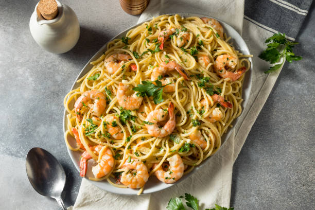

Home
Shrimp Scampi

Description
Shrimp Scampi is a classic dish that I personally love to make.
I found this recipe through NYT cooking and have loved it ever since.
Ingredients
- Shrimp
- Butter
- White Wine
- Lemon Juice
- Angel Hair Pasta
- Ground Black Pepper
- Red Pepper Flakes
- Garlic
- Parsley
Steps
- Cook pasta to 2-3 minutes under package recommendation, set aside
- Brown butter in a skillet then add shrimp to cook
- Crush garlic and add to skillet
- Add white wine and lower heat to reduce
- When shrimp is cooked through, add pasta and seasonings, serve!